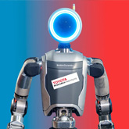
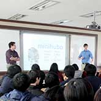

-

BD + TRI Partnership
Team Manager -
LBM1.0
Hands and Whole-Body Lead -
Punyo
H/W Dev / Team Lead -
Punyo-1
H/W Dev / Team Lead -
 Audrey III
Audrey III
Halloween Speed Project -
CWBB?
Workshop Organizer -
 Soft-Bubble Grippers
Soft-Bubble Grippers
H/W Dev, Team Lead -
Compliant Fingers
H/W Dev -
Visuotactile Sensing
H/W Dev -
 Soft Robotic Hand and Arm
Soft Robotic Hand and Arm
H/W Dev -
Tetrabot
H/W Dev -
Snapbot: A Reconfigurable Legged Robot
H/W Dev -
 Task-based Design Optimization
Task-based Design Optimization
H/W Dev -
 Hugging Study
Hugging Study
H/W and S/W Dev -
EM-Comm
Wearable H/W Dev -
Soft Upper Body @ Disney
Design and Dev -
 3D Printed Soft Skin
3D Printed Soft Skin
Design and Dev -
 Earduino
Earduino
Speed Project -
ActiveStudio
Robot Animation Interfaces -
 Allegro Hand
Allegro Hand
H/W and S/W Dev -
 Allegro Arm
Allegro Arm
H/W Dev -
 Allegro Dog
Allegro Dog
Development and Customer Training -
Humanoid Pushing
Masters Research -
 DARwIn-OP Driving
DARwIn-OP Driving
a Roomba! -
 Hubo Throwing
Hubo Throwing
Phillies First Pitch -
Mini Humanoid
F/T Sensors -
 LEGO Wheeled
LEGO Wheeled
Inverted Pendulum -
 Mobile Robot
Mobile Robot
Vision and Navigation -
 Mobile Navigation
Mobile Navigation -
 Six HUBOs
Six HUBOs
at Drexel -
 3-Axis Gantry
3-Axis Gantry
for Mini Humanoids -
HUBO Wiki
Collaborative Documentation -
 Mini Humanoid
Mini Humanoid
Planning and Manipulation -
 Product Development
Product Development
Jumping Kangaroo Leg -
 RoboticsLab
RoboticsLab
Evaluation and Tutorials -

STEM & Humanoids
Pres. in Suwon, S. Korea -
HuboQ
Dynamic Mobile Robot -
 STEM w/ HUBO2
STEM w/ HUBO2
at KAIST S. Korea -
 Mini Humanoid
Mini Humanoid
Path Planning and Dynamic Walking -
 Mini Humanoid
Mini Humanoid
Manufacturing